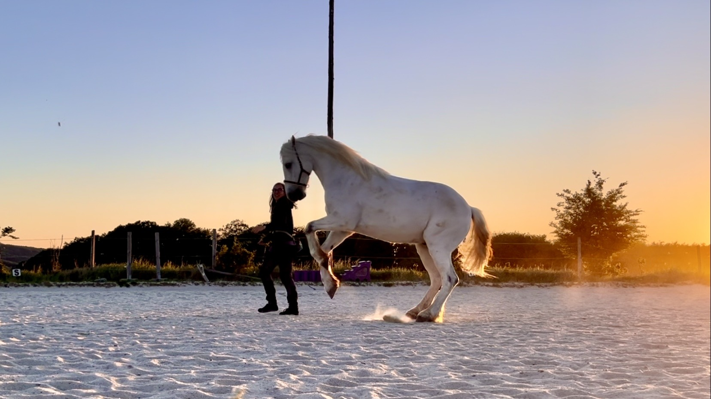
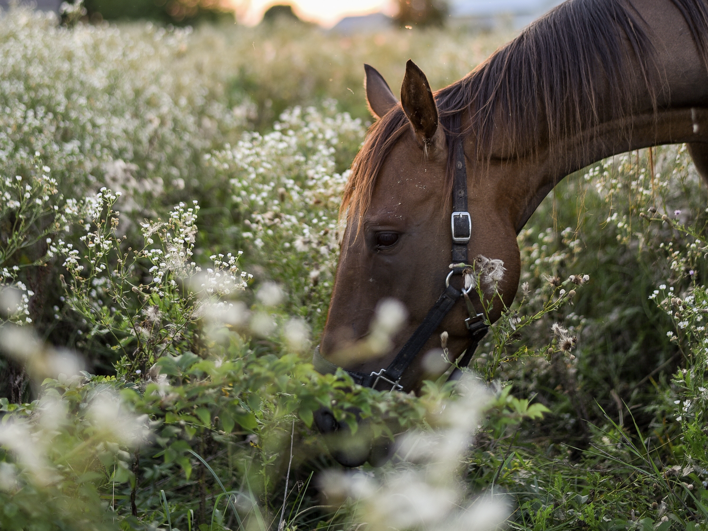

Blog
Beiträge zu Pferdeernährung, Heuanalyse, Training und Tierhaltung — fundiert, praxisnah und unabhängig.

Heuanalyse
Heuanalyse in Österreich: 3 Labore im Vergleich (mit Preisen)
20. Mai 2026
Futtermittel
Wie viel gebe ich als Futterberaterin für Futter aus?
9. März 2026

Trainingstagebuch
Ein Jahr ohne Eintrag — Diagnose, Reha und Comeback
6. Juni 2024

Mineralfutter
Was Mineralfutter nicht leisten kann
20. Februar 2024

Trainingstagebuch
Reha, Muskelaufbau und erste Schritte zur Schubentwicklung
29. Mai 2023

Anweiden
Pferdegerechtes Anweiden
20. April 2023

Trainingstagebuch
Nero ist da — Ankommen und Freiarbeit
13. Februar 2023

Mineralfutter
Organisch oder anorganisch — welches Mineralfutter ist das Beste?
3. Dezember 2022

Heuanalyse
Zucker und Fruktan in der Heuanalyse: Warum du sie nicht einfach addieren solltest
9. November 2022

Futtermittel
Rübenschnitzel für Pferde: Wann sinnvoll, wann riskant?
21. Oktober 2022